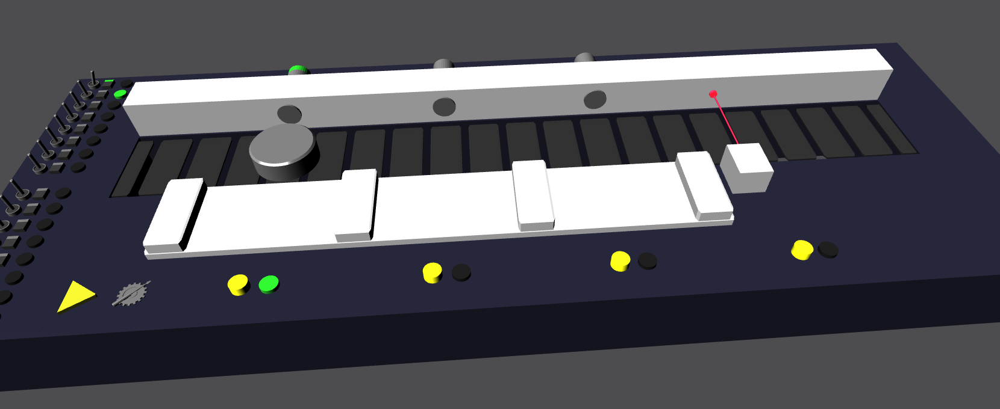
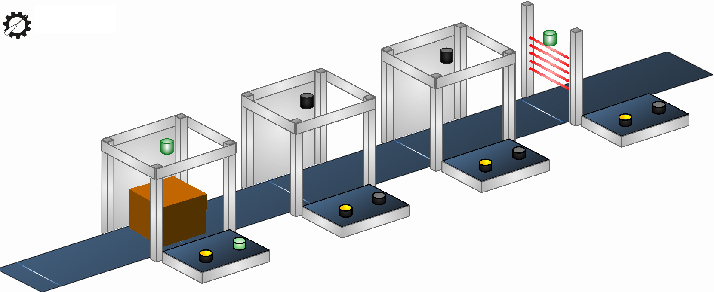
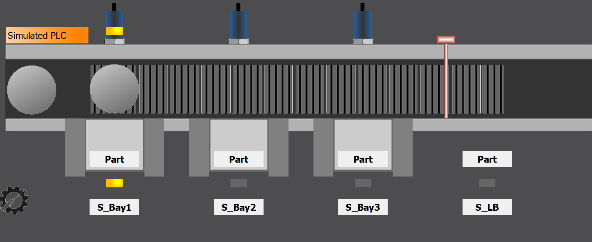
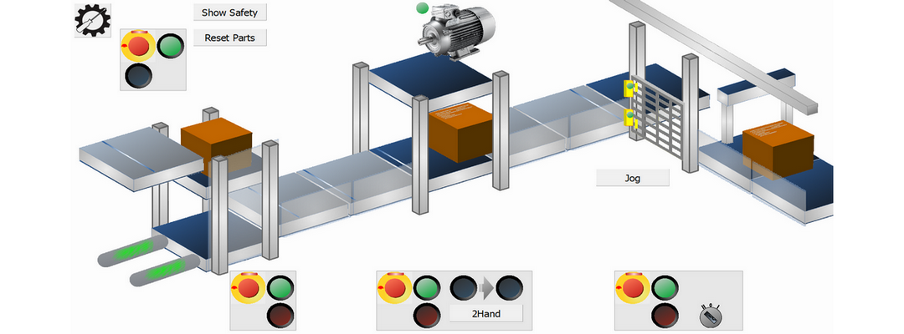

Cam410 is a small series of programs that can be used to simulate (replace) the conveyor used in remote/online Sitrain (Step7 and TIA) courses ...
Cam410, Cam410C, Cam410D
Simulator for TIA Pro, TIA Serv, Step7 Pro, Step7 Serv, etc...
Cam410 is a small simulator for the conveyor band used in Siemens SITRAIN courses.
Cam410 may be connected to a real Step7 300 or Step7 1500 PLC using a TCP/IP connection.
The simulated conveyor is controlled by the outputs of the PLC, the conveyor band may be moved in both directions traversing the parts placed on the band.
A click with the mouse on any button of the simulated conveyor sets the corresponding input in the connected PLC.
Help:
Settings: Press Settings button and select a template for addresses: TIA training template or ST (Step7 Classic) template.
Set also the addresses for Inputs and Outputs according to the real training stand.
Set the TCP/IP address of the target PLC and the Rack and Slot position of the CPU: usual values are Rack0 Slot0 for S7-1500 and Rack0 Slot2 for S7-300.
Scene selection: Select a simulation view from a predefined list:
Scene3: a 3D simulation of the conveyor.

Scene2: a 2.5D simulation of the conveyor.

Scene1: a 2D simulation of the conveyor.

Versions:
- v230629 [29.06.2023] Cam410D: Minor bug fixes. Small changes of the 3D simulator.
- v230124 [24.01.2023] Cam410D: Fork of Cam410C based on Cam410C v230124. First version with 3D simulation.
- v230124 [24.01.2023] Cam410C: Improved icons and graphics.
- v221025 [25.10.2022] Cam410C: Bug Fixes (template activation error, etc.)
- v220321 [21.03.2022] Cam410C: Minor interface changes.
- v220117 [17.01.2022] Cam410C: Improved graphics and functional improvements regarding simulation speed.
- v210524 [24.05.2021] Cam410C: Variable window size.
- v210511 [11.05.2021] Cam410C: Test for a variable window size.
- v210509 [09.05.2021] Cam410C: Test on a common version for both TIA Portal and S7-300 training racks.
- v210407 [07.04.2021] Cam410C [Classic] [for S7-300]: Fork of Cam410. Adapted for S7-300 training rack.
- v210301 [01.03.2021] Cam410: Checkbox for quick change of addresses S7-1500 to ET200SP. Last version of Cam410. Replaced by Cam410C from Cam410C v210509
- v210123 [23.01.2021] Cam410D: Initial test for a 3D simulation based on OpenGL. Version only for tests, not functional.
- v201204 [04.12.2020] Cam410 [zip201215]: PID control simulation. Corrected some fonts, added scalability (fixed sizes).
- v201112 [12.11.2020] Cam410 [zip201201]: Change of analog inputs scale...
- v201029 [29.10.2020] Monitrain [zip201106]: Control code added on connectivity...
- v201017 [17.10.2020] Monitrain: 2.5D view added. Various functional improvements and bug fixes.
- v200514 [14.05.2020] Monitrain: Animation speed control. Editable texts for button labels.
- v200428 [28.04.2020] Monitrain: First functional version. 2D fixed size. Set for TIA Portal training rack.
The project uses Snap7 under LGPL3 License to communicate with the Sinumerik/Sinamics/Step7 equipment.
The project uses Qt under LGPL3 License.
The project may also use S7ONLINE interface if the DLL file is provided by user and a license is activated.
Cam410S, Cam410hlp: Simulator for TIA Safety
Cam410S

Cam410s is a small simulator of the "labeling machine" used during the "TIA Safety" training...
Versions:
- v230124 [24.01.2023] Improved icons and graphics.
- v221017 [17.10.2022] Variable window size. Functional improvements. Bug fixes.
- v220222 [22.02.2022] New version for TIA Portal Safety v16/17 training rack. Various functional improvements and bug fixes.
- v210119 [19.01.2021] Bug fixes.
- v201204 [04.12.2020] [zip201218] First tests. 2.5D fixed size. Set for TIA Portal Safety v15 training rack.
Cam410hlp
Cam410hlp is a small C# application used to control the "Safety Inputs" of a simulated PLC.
Safety inputs are protected in the PLC and their value cannot be written from an external application.
PLC simulators, such as PLCSIM Advanced, also maintain this behavior so that Safety Inputs remain protected.
Because of this, even when using S7-PLCSIM or S7-PLCSIM Advanced simulators, Cam410s can read both "standard" and "safety" PLC outputs, can write the "standard" PLC inputs but can not write "safety" PLC inputs values.
Cam410hlp is using PLCSIM Advanced API interface to help Cam410s control "safety" inputs of the simulated PLC.
Help:
The first instance (instance 0) from PLCSim Advanced is automatically connected.
- If PLCSim Advanced is not installed, Cam410hlp will fail to initialize.
- When no instance is active in PLCSim Advanced, Cam410hlp waits for one.
- When more than one instance is active in PLCSim Advanced, first one (instance 0) is connected.
- When instance 0 is closed, Cam410hlp connects automatically to the next available instance (new instance 0) (if one is active).
Pairs of addresses are declared in the settings file cam410hlp.ini:
I_[n]=
O_[n]=Addresses may be absolute (starting with character %) or symbolic "PLC tags" (without % as first char).
For absolute addresses only I, M, Q are allowed and only Bool or Byte.
Example for Bool: %I0.0, %M2.7, %Q12.3
Example for Byte: %MB10, %IB12, %QB20
All addresses of type "PLC Tag" (symbolic addresses) must be already present in a Tag Table in PLC; Cam410hlp checks the list when connecting to PLC.
After a successful connection to instance 0 of PLCSim Advanced, values of variables declared on I_[n] are transferred to variables declared on O_[n], if possible.
Values are transferred only between parameters of the same or compatible type:
I_[n]=%M20.0
O_[n]=%I4.0The M20.0 value is automatically transferred to I4.0
Versions:
- v220330 [30.03.2022] Fixed "crash on downloading PLC program".
- v210104 [04.01.2021] First functional version.